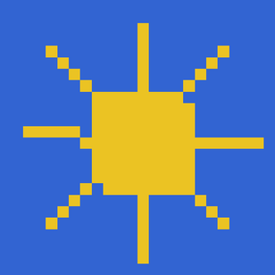

1.000
Geometry is easy
Median translation PIoU for all eight models (random baseline: 0.072). 98.1% of 13,920 translation attempts clear the 0.6 gate.
Probing 2D Spatial Reasoning in Text-Only Language Models
Institute for Visual & Analytic Computing · University of Rostock
Large language models trained only on text and code can sometimes write programs that draw recognizable images. But is the picture the product of spatial reasoning, of fluent code generation, or of the drawing interface itself?
We introduce AM-Bench, a benchmark that separates two abilities on a deterministic 24 × 24 canvas: translating fully specified geometry into drawing code, and composing a layout from an underspecified prompt. Across eight open-weight text-and-code-only models, all reliably translate specified geometry into code, yet their open-ended layout performance differs substantially, so these differences are not explained by code-generation ability alone. Replacing procedural code with raw SVG improves layout scores across all models, showing that the output medium matters. Residual-stream probes show that a coarse layout plan is present before generation but reflects only the layout implied by the prompt; a code-level intervention shows that models then track the evolving geometric state while drawing, rather than executing a fixed plan.
How well can text-only language models compose 2D layouts, how does the output medium affect this ability, and what spatial information do they represent before drawing?
Median translation PIoU for all eight models (random baseline: 0.072). 98.1% of 13,920 translation attempts clear the 0.6 gate.
Layout scores (Judge 1, 0–5) span almost two points across models with near-identical translation ability. Both judges rank models identically (ρ = 1.0).
Raw SVG beats the custom Python canvas API on pooled layout score at matched 24 × 24 resolution (95% CI [0.26, 0.47]).
Mean ΔR² of pre-generation residual-stream probes over a text baseline; significant in all eight models. Model-specific layouts are not.
We model drawing as a pipeline. A prompt may induce an internal layout plan (S1), which the model expresses as program code (S2), which a deterministic executor rasterizes into geometry (S3). Only S2 and S3 are observable. The translation task supplies S1 directly in words, so it isolates S1→S2 code-writing; the layout task requires the model to produce S1 itself.

Each output is a short Python rendering function restricted to six primitives, arithmetic, iteration, and math. A deterministic executor rasterizes it (Bresenham lines, midpoint-circle fill, polygon fill). Colors come from a palette of 30 named colors to avoid tokenization confounds.
fillset_pixelrectcirclelinepoly
The prompt states every part's type, position, size and color in row/column terms, with the subject name withheld. Outputs are scored symbolically in normalized coordinates with exact polygon clipping: each primitive is assigned to the reference part it overlaps most, and part-wise IoU is averaged.
An over-paint penalty multiplies by (1 − over-painted fraction); invalid outputs score 0. A model's layout score enters cross-model comparison only if its median PIoU clears τ = 0.6, fixed before any scores were seen.
145 references12 samples eachExact areaThe prompt names a subject and leaves the arrangement open; the model must decide what goes where. Each prompt is sampled 11 times (1 greedy, 10 stochastic). Two VLM judges with an identical rubric score five dimensions on a discrete 0–5 scale; an output passes at a mean ≥ 3.0.
150 layout prompts, 10 per subcategory, organised in three tiers of increasing compositional demand.
Two annotators independently judged a fixed set of 350 output pairs (Krippendorff's α = 0.60; agreement on 70.6% of pairs). Where annotators agreed and a judge separated the pair, the judge matched the human verdict:
Every model clears the translation gate with a median PIoU of 1.000, so layout gaps cannot be attributed to syntax or API errors. Layout quality, however, varies widely, and the two judges, though differing in leniency (Judge 2 is ≈ 0.9 points more lenient), produce the same model ordering.
Mean VLM layout score (0–5), macro-averaged over subcategories. Right column: mean translation PIoU. Values from Tables 1–2 of the paper.
| Model | Judge 1 (Qwen2.5-VL-7B) | Judge 2 (InternVL3-8B) | Transl. PIoU | ||||||
|---|---|---|---|---|---|---|---|---|---|
| T1 | T2 | T3 | All | T1 | T2 | T3 | All | ||
We rerun the identical layout prompts and protocol, but let the model write raw SVG. SVGs are re-rasterized from their vector sources to 24 × 24 before scoring, and the canvas baseline is re-scored with the same medium-neutral judge prompt, so only the interface changes.
Every model improves; six of eight improvements are individually significant, and CodeLlama 34B gains most. Models keep a similar relative order under either medium. Part of what looks like a spatial limit is therefore an interface limit; the custom API remains the primary medium because, unlike SVG, its vocabulary is not contaminated by pre-training data.
We fit ridge probes on prompt-token residual-stream activations, before any output is generated, to predict a 6 × 6 occupancy grid: the fraction of a model's repeated attempts that draw into each 4 × 4-pixel cell. Layer, token position and penalty are selected within training folds, and a TF-IDF model of the prompt, refit per fold, serves as the text baseline.
Probes beat the text baseline in every model after Benjamini–Hochberg correction, by a mean ΔR² = +0.164. Prompt length does not predict the target (R² = −0.03).
For GLM-4 32B and Gemma 2 27B we decompose each model's layouts into a component shared across both models and a model-specific residual. Activations recover the shared component well above the prompt baseline (ΔR² +0.26 and +0.28), but not the specific one (R² ≤ 0.005), even though split-half ceilings show it is reliable (0.883 and 0.941).
To test whether generation follows a fixed plan or the evolving code state, we truncate 731 generations after their first drawing statement, edit that statement's coordinates, and resume decoding (26,316 continuations over four arms). Moving the first shape into unused canvas space sharply increases how often the model keeps drawing:
Continuation rate, unchanged (null) vs moved into unused space; both BH-FDR p = 0.0007. A smaller move into used space has a weaker effect (+0.08 and +0.16).
Together, these results are consistent with a coarse, prompt-implied layout sketch that is refined incrementally while the model tracks the textual geometric state, rather than a complete, model-specific drawing plan formed in advance.
Eight open-weight models (8B–34B); larger and closed models are untested. AM-Bench measures coarse, code-generated 24 × 24 images, a necessary rather than sufficient test of spatial competence, and layout scores depend on VLM judges whose per-sample agreement is moderate (Pearson r = 0.43–0.54). The shared/specific decomposition and the intervention cover two models and act on generated code, not activations; they do not establish a causal internal drawing plan.
The project began as an interactive exhibit, shown at the CVPR 2026 Art Gallery in Denver and the ECCV 2026 Art Gallery in Malmö: a text-only model is handed a blank grid and a prompt and paints it one step at a time, first as an ASCII grid with a color palette, then as geometric drawing code. Shapes in the ASCII version drift and fragment; the code version works far better. That gap became the research question behind AM-Bench.
Exhibit outputs from the ASCII-canvas and code-canvas prototypes (Qwen2.5-14B-Instruct). These are separate from the benchmark evaluation. Try the live demo →
@inproceedings{nedungadi2027autoregressivemosaics, title = {Autoregressive Mosaics: Probing 2D Spatial Reasoning in Text-Only Language Models}, author = {Nedungadi, Ashwin and Oehmcke, Stefan and L{\"u}dtke, Stefan}, booktitle = {Proceedings of the IEEE/CVF Winter Conference on Applications of Computer Vision (WACV)}, year = {2027} }
@misc{nedungadi2026autoregressivemosaics, title = {Autoregressive Mosaics: Probing 2D Spatial Reasoning in Text-Only Language Models}, author = {Nedungadi, Ashwin and Oehmcke, Stefan and L{\"u}dtke, Stefan}, year = {2026}, eprint = {2608.30751}, archivePrefix = {arXiv}, primaryClass = {cs.AI}, url = {https://arxiv.org/abs/2608.30751} }